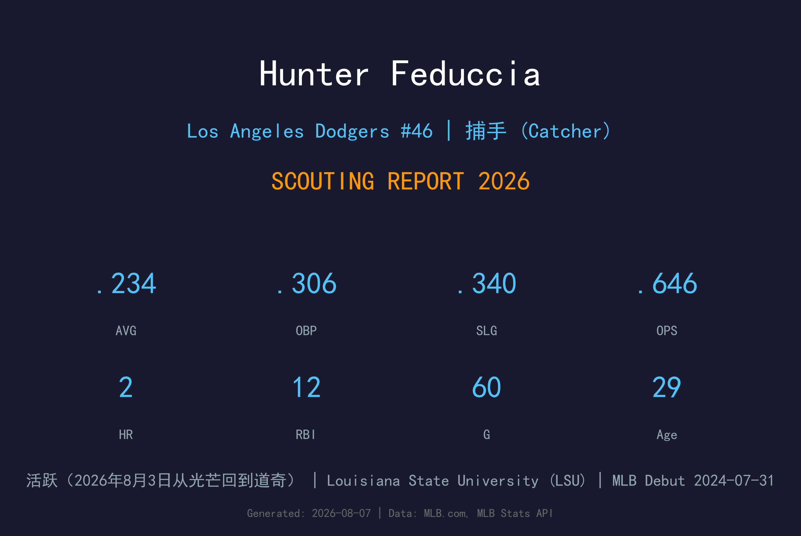
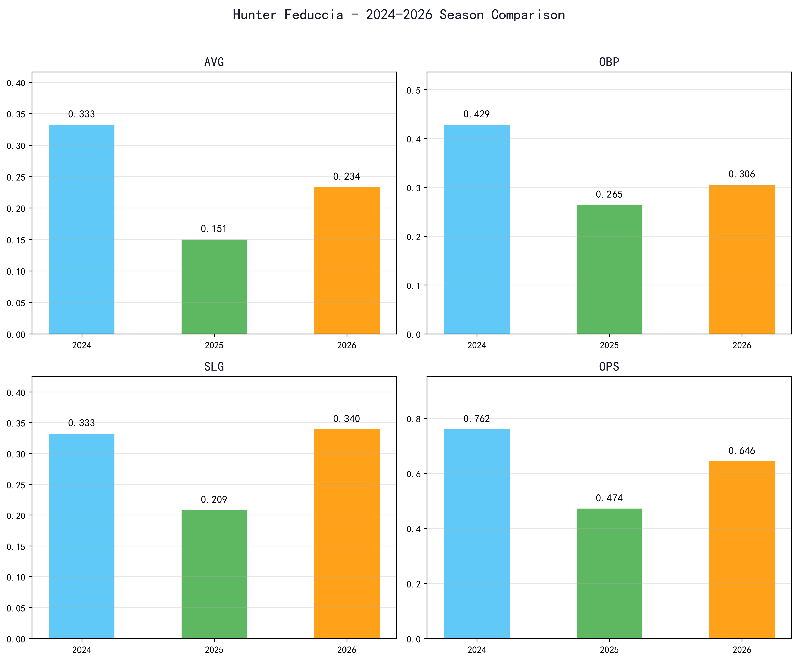
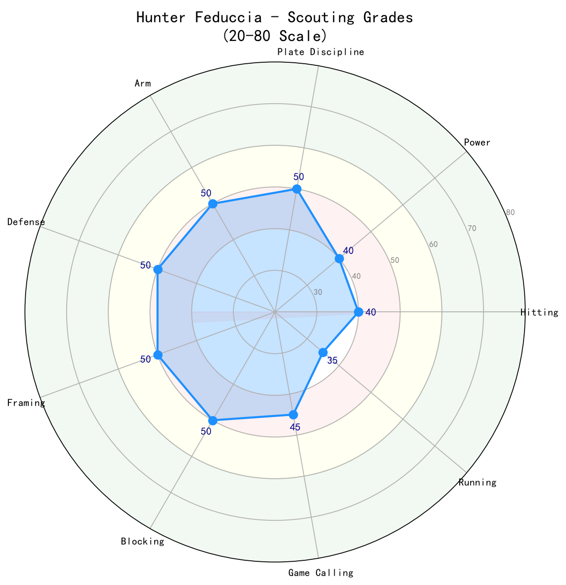

Los Angeles Dodgers #46 | 捕手 (Catcher) | 活跃（2026年8月3日从光芒回到道奇）

Hunter Feduccia 是道奇自家农场出身的替补捕手，2024 年完成大联盟首秀，2025 年季中被交易至光芒，2026 年8月3日又被交易回道奇。他是一名以选球与守备见长的左打捕手，但大联盟打击样本有限，且面对左投表现极差。
2026 年在光芒 60 场出赛缴出 .234/.306/.340、2 轰、12 打点，相比 2025 年的 .151 有显著进步。他在 3A 曾展现 .280+/.400+ 的上垒能力，但尚未稳定转化到大联盟。道奇重新拿回他，主要是为补强捕手深度并提供便宜的左打替补选择。
29 岁的 Feduccia 已接近定型：天花板是稳定的 backup catcher，关键价值在于 接捕偷好球、阻挡与偶尔对右投的贡献。
出身 Barbe 高中，在 LSU-Eunice 两年打下 .390 生涯平均后转 LSU。2018 年道奇第12轮（374顺位）选中他。
2024年7月31日对教士以代打身份完成大联盟首秀。该年道奇 5 场出赛、4 安打、1 打点。
7月31日被道奇交易至光芒，换来 Paul Gervase、Adam Serwinowski 与 Ben Rortvedt。在光芒 36 场出赛，打击率 .151。
8月3日光芒将他与 RHP Jacob Kmatz 交易回道奇，换来外野手 Jack Suwinski。背号 #46。

📈 上图为近三年核心数据趋势。柱状图高度代表该年度表现，便于快速比较球员状态的上升或下滑。
| 赛季 | G | AB | PA | HR | RBI | BB | SO | AVG | OBP | SLG | OPS |
|---|---|---|---|---|---|---|---|---|---|---|---|
| 2024 | 5 | 12 | 14 | 0 | 1 | 2 | 2 | .333 | .429 | .333 | .762 |
| 2025 | 36 | 86 | 102 | 0 | 8 | 14 | 28 | .151 | .265 | .209 | .474 |
| 2026 | 60 | 141 | 160 | 2 | 12 | 14 | 44 | .234 | .306 | .340 | .646 |
Feduccia 采用左打者常见的紧凑姿势，挥棒路径较为水平，擅长把球打向反方向。他的主要价值在于选球：2025 年在光芒 102 打席 14 保送，BB/PA 约 13.7%，在至少 100 PA 的捕手中名列前茅。问题是三振率也高达 27.5%，显示他在两好球后常追打坏球。
2024 年道奇 5 场小样本 .333/.429；2025 年光芒 36 场 .151/.265 严重低潮；2026 年 60 场回升到 .234/.306/.340。虽然 OPS 仅 .646，但对一名 backup catcher 已属可接受范围。关键在于他能否维持在 .240/.320/.350 左右的水准。
2025 年数据清楚显示他对左投几乎无法打击：对右投 .321 OBP 还有基本贡献，对左投 OBP 仅 .048。这限制他只能作为 左右分工 后半的右投 specialist。道奇若要使用他，必须严格避免左投 对位。
光芒时期 28 场先发捕手没有失误与漏接，显示接捕基本功稳定。3A 时期 接捕偷好球 与阻挡能力获得好评，虽然大联盟 接捕偷好球 数据样本不足。他的配球经验主要来自道奇农场，对道奇投手群相对熟悉，这是交易回他的隐性价值。
Feduccia 回到道奇后预计担任第三捕手或 Will Smith 的替补。他可能在 Smith 需要休息、面对右投先发时获得首发机会。除非 Smith 长期伤病，否则他的上场时间有限。

Hunter Feduccia 是一名合格的 backup catcher，主要价值在于选球与守备稳定性。他能在面对右投时提供有限进攻贡献，但无法对抗左投。29 岁的年龄让他的天花板受限，未来定位是道奇第三捕手或交易筹码。
C+ 级 / 替补捕手深度
Feduccia 回到道奇后，短期定位明确：Will Smith 的替补或第三捕手。他不需要承担大量先发，但必须在有限机会中证明能维持 2026 年 .234/.306/.340 的水准。
2026 下半季：道奇第三捕手，预计 20-30 场出赛，主要面对右投先发。
2027：若 Smith 健康，仍 backup；若 Smith 离队或受伤，可能升任主要替补。
2028+：天花板为稳定 backup catcher，OPS 约 .650-.700。
Hunter Feduccia 出生于路易斯安那州 Lake Charles，在 Barbe High School 度过高中时期。该校是路易斯安那州棒球名校，培养出 Wade LeBlanc 等 MLB 球员。Feduccia 在高中时直到高三才成为常规先发，该年打出 .353 并获得 all-district 荣誉。
大学时期他先就读 LSU-Eunice 两年，创下 .390 生涯打击率并保持校史纪录；随后转入 Louisiana State University (LSU)。2018 年道奇在第12轮（374顺位）选中他。
他在道奇农场体系缓慢爬升，2023 年在 3A Oklahoma City 打出 .279/.387/.451、11 轰、57 打点的成绩。2024 年完成大联盟首秀，2025 年被交易至光芒，2026 年8月3日又被光芒送回道奇，换来 Jack Suwinski。